Jenkins持续集成
1.Jenkinsfile文件的编写
1.jenkinsfile头部定义项目的有关信息
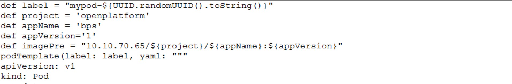
2.填写相关的kubernetes的pod需要分配的资源信息，挂载盘等。

3.填写相关的jenkins的pipeline信息，pipeline以stage来区分构建流程，每一个stage是一个步骤。
-构建容器 -1.生成流水线脚本并填写(从jenkins中获取或联系ops获取) 获取步骤： 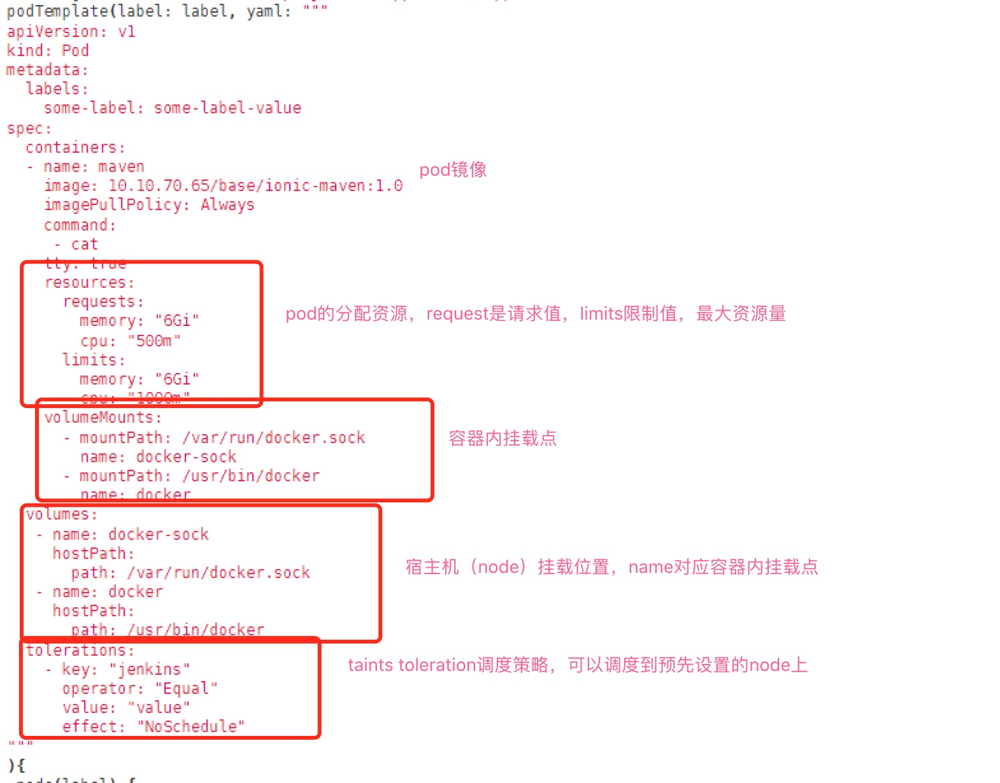 点击流水线脚本，进入流水线脚本页面后填写相关信息。 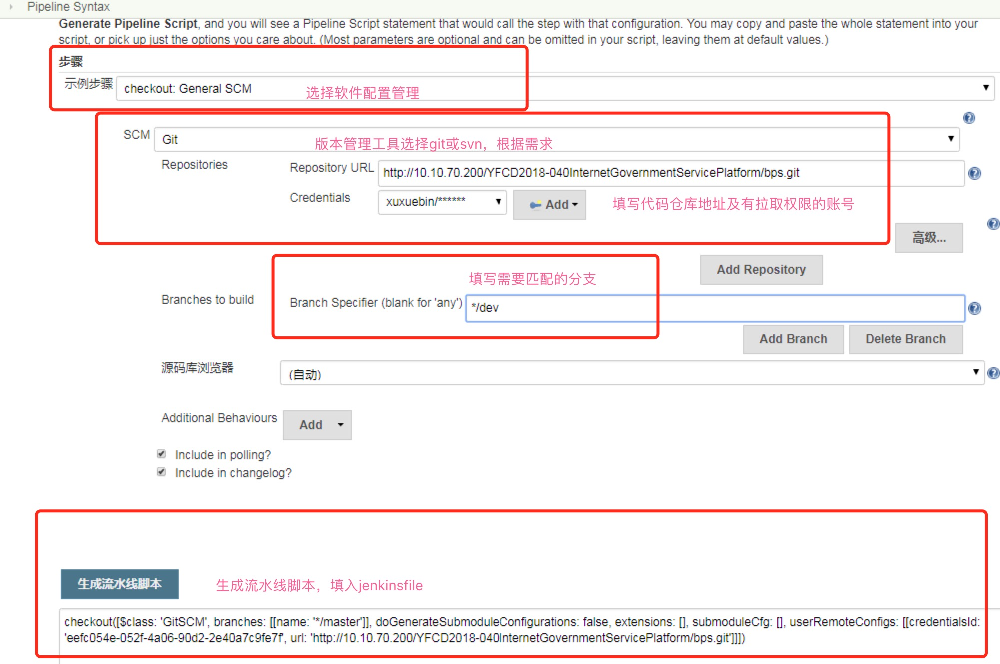 点击流水线生成后填入Jenkinsfile中。 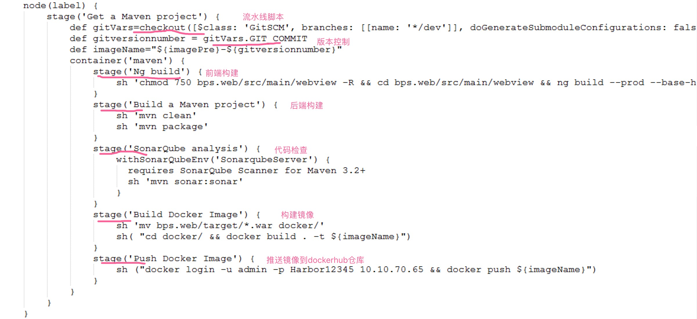 -2.配置相应的项目镜像搭建步骤: <1>ng/ionic build: 对目标前端文件夹进行授权，进入前端项目文件夹，构建前端项目，开发人员要进行build命令的测试确保项目无错，代码错误与引用错误都会停止打包。 <2>build a maven project:进行后端java项目的打包，开发人员要进行mvn相关打包的测试确保项目无错，jar包冲突，代码的一些错误会停止打包。 <3>sonarqube analysis:代码质量检查，运用alibaba p3c空间进行代码的扫描，后期会将代码质量也重视起来。（可配） <4>build a docker image:构建docker镜像。 <5>push docker image:将构建的镜像传入dockerhub中。 ps：目前开发人员只需要修改头部项目信息，流水线脚本信息以及项目构建的前后端stage部分。
2.Dockerfile文件的编写
注：首先要确定是否要部署在线的单点登录，jwt，权限系统等依赖系统，是否切数据库等，如需切换，将打好的war包交与ops人员。
Dockerfile包括两部分，第一部分是dockerfile，是启动docker容器时执行的docker流程，第二部分是启动docker容器要执行的替换变量和具体启动tomcat等容器的命令。
1.docekrfile：dockerfile主要是docker容器启动时的操作，拉取基础镜像，启动docker容器等，开发人员需要确定自己的项目包正确。
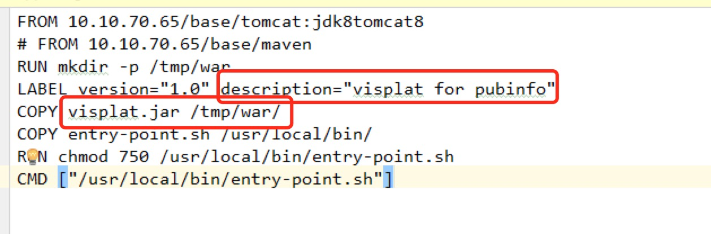
2.entry-point：该文件是docker镜像启动时的具体操作，主要操作时对项目包的解压，替换变量，压缩，启动容器等。
entry-point文件中需要将war包运行的文件夹修改为自己项目中的，并且将web.xml中的单点登录，jwt和前端配置的用户权限，jwt替换为58服务器，在58服务器中由ops人员做反向代理，
转发到目标服务器，数据库如果需要切换，也需要替换。
war包
 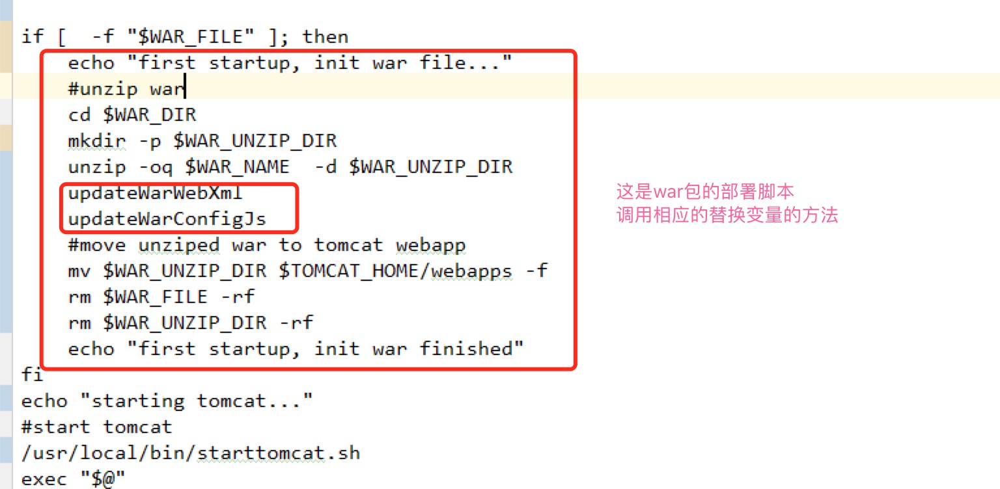
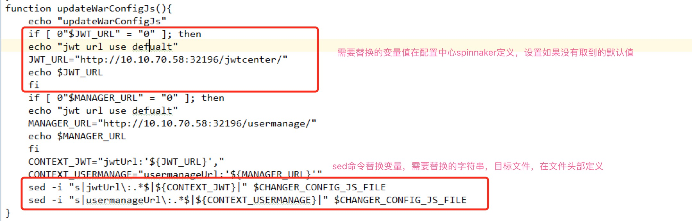
jar包
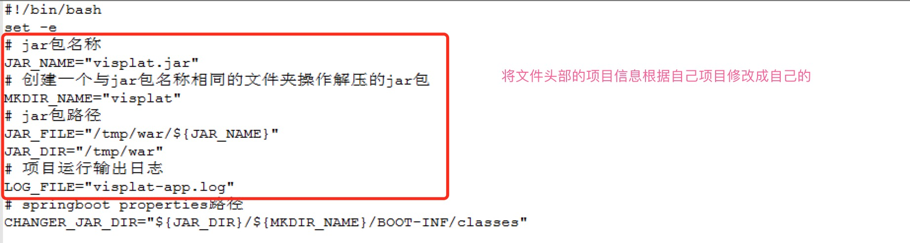
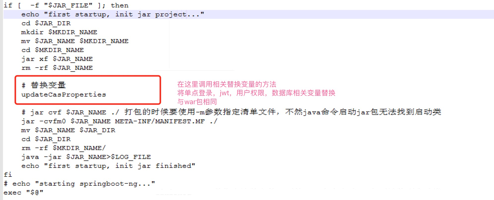
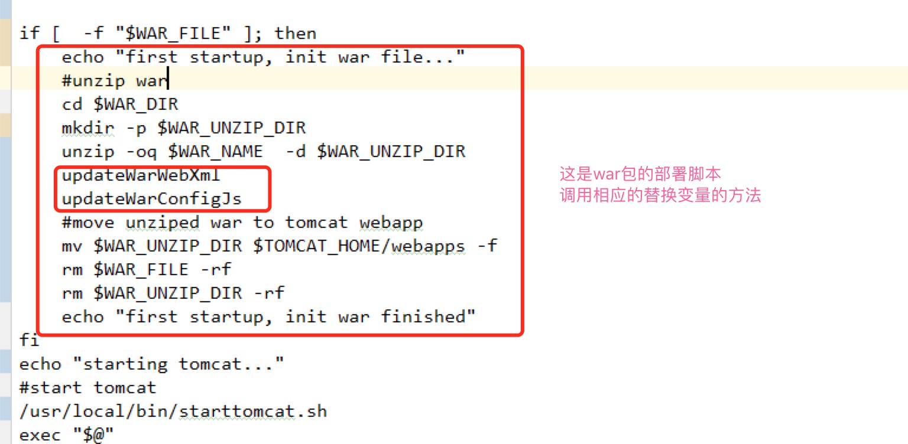
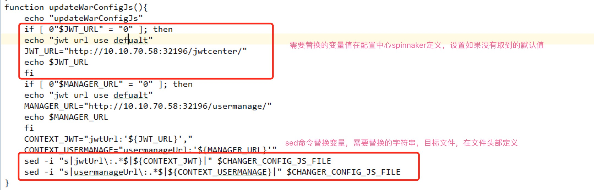
jar包
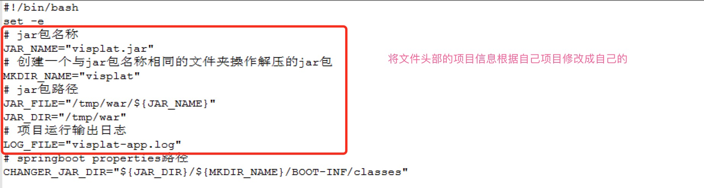
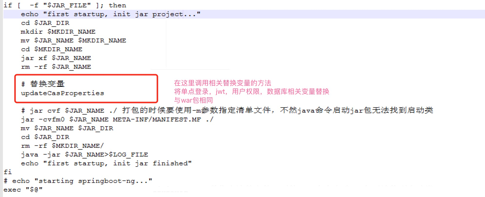